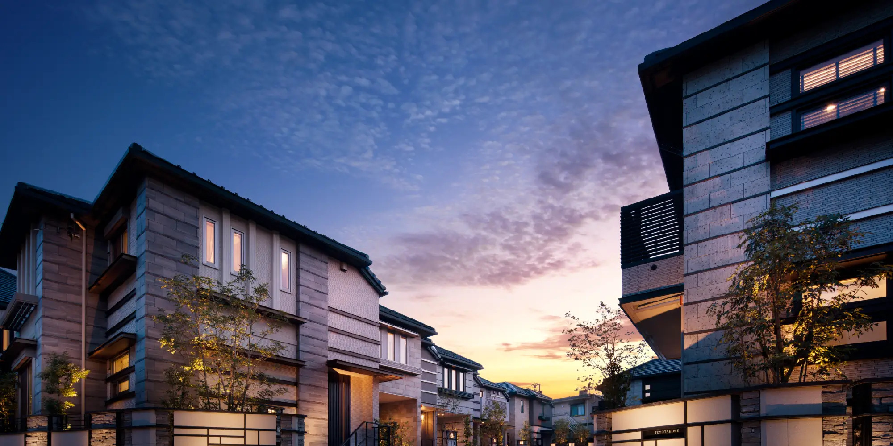
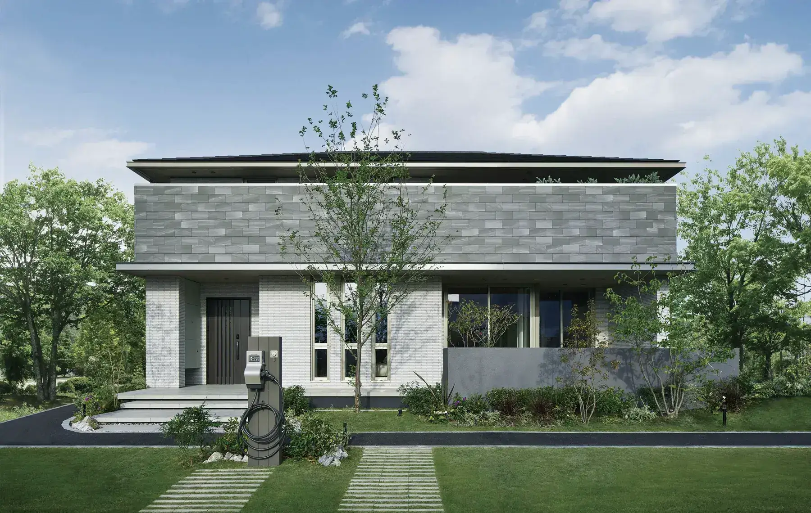
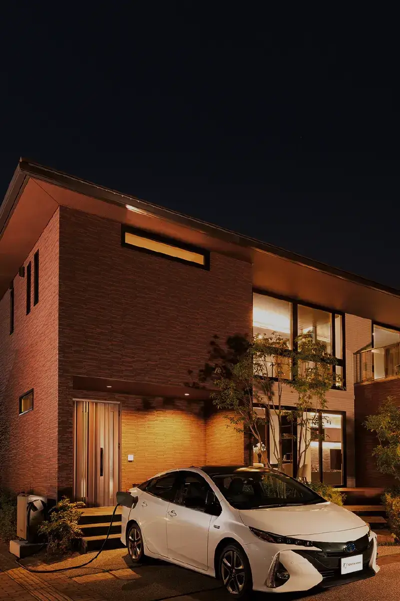
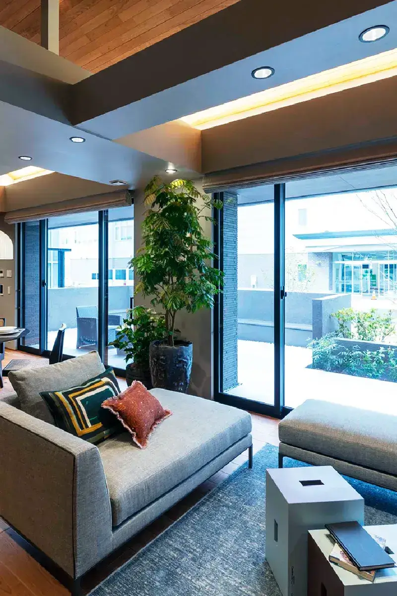
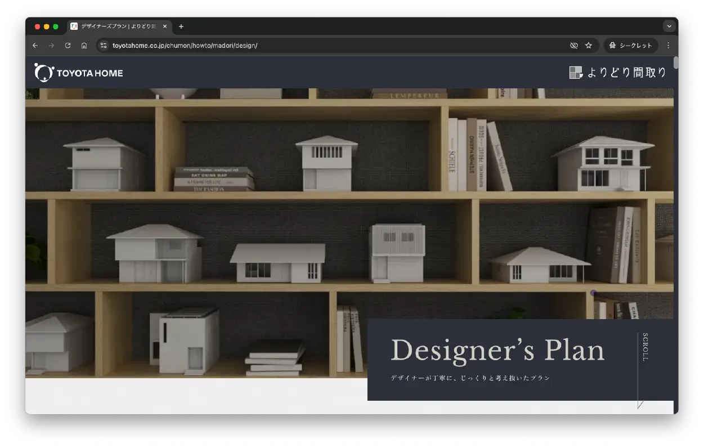
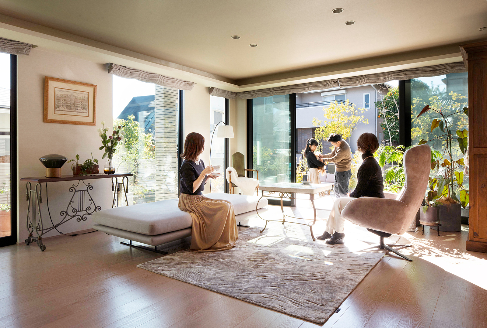

① 会社・基本データ

トヨタホームは2003年4月1日、トヨタ自動車の住宅事業部を分社化して誕生した鉄骨系ハウスメーカー。住宅事業の起源は1975年のトヨタ自動車住宅事業部まで遡り、住宅事業の歴史は50年超。本社は愛知県名古屋市東区泉にある。
| 項目 | 内容 |
|---|---|
| 会社名 | トヨタホーム株式会社（Toyota Housing Corporation） |
| 設立 | 2003年4月1日（トヨタ自動車住宅事業部を分社化） |
| 起源 | 1975年、トヨタ自動車住宅事業部として発足 |
| 本社 | 愛知県名古屋市東区泉1丁目23番22号 トヨタホーム栄ビル |
| 資本金 | 129億円 |
| 親会社 | プライム ライフ テクノロジーズ株式会社（PLT／100%子会社） |
| PLT構成 | パナソニックHD 75%・トヨタ自動車 25%の合弁持株会社（2020年1月7日設立当時の出資比率） |
| 兄弟会社 | パナソニック ホームズ／ミサワホーム／松村組 |
| 売上高 | トヨタホーム単体: 約1,730億円（2024年3月期） |
| 代表者 | 代表取締役社長 西村 祐 |
| 販売戸数 | 約3,469戸（2024年3月期／戸建・マンション・賃貸含む） |
| 従業員数 | 3,067名（2024年3月期／単体） |
| 対応エリア | 全国（中部・東海エリアが最強） |
地域販売会社（全国13社以上）
トヨタホームは本体とは別に、各地域に販売会社を持つ「販社体制」を採用。施工・アフターは地域販社が担う。公式会社概要では全国16社と記載（販売会社一覧では13社＋α）。
| 販社 | エリア |
|---|---|
| トヨタホーム愛知 | 愛知県（豊田・刈谷・安城・岡崎・豊橋ほか） |
| トヨタホーム名古屋 | 名古屋市・尾張地区 |
| トヨタホーム東京 | 東京・神奈川 |
| トヨタホーム岐阜 | 岐阜県 |
| トヨタホーム静岡 | 静岡県 |
| トヨタホーム三重 | 三重県 |
| トヨタホーム近畿 | 大阪・京都・兵庫・奈良・滋賀・和歌山 |
| トヨタホーム岡山 | 岡山県 |
| トヨタホーム中国カンパニー | 広島・山口・島根・鳥取 |
| トヨタホーム茨城 | 茨城県 |
| トヨタホーム九州 | 福岡・佐賀・長崎・熊本・大分・宮崎・鹿児島 |
| トヨタウッドユーホーム | 栃木・群馬（北関東エリア） |
「トヨタホーム北関東」という独立販社は存在しない。栃木・群馬エリアはトヨタウッドユーホームが担当する。「アトリスプラザ栄」（名古屋市東区）はトヨタホーム本社直営のショールームで、販売会社「トヨタホーム愛知」「トヨタホーム名古屋」とは別体制。
一言で言うと？
「トヨタブランドの安心感 × 鉄骨ユニット工法の品質均一性 × 60年長期保証」を武器にする中〜高価格帯のハウスメーカー。本社が愛知県名古屋市にあり、中部・東海エリア、とりわけ愛知県では圧倒的な知名度とネットワークを持つ。「トヨタ」ブランドへの信頼感は他社が真似できない強み。
② 商品ラインナップと坪単価

トヨタホームは3つの工法で多彩な商品を展開。2024-2026年にかけて木造MOKUAや規格住宅LQなど商品刷新が続いている。
2-1. 鉄骨ユニット工法「シンセ（SINCÉ）シリーズ」
工場で約85%を完成させ現場で組み立てる、トヨタホームの主力シリーズ。
| 商品名 | 坪単価目安（2026年） | 特徴 |
|---|---|---|
| SINCÉ Code（シンセ・コード） | 100万円〜 | 2024年2月登場のフラッグシップ。廃番となった「シンセ・フィーラス」の後継。都市型・高意匠 |
| SINCÉ Cada（シンセ・カーダ） | 約99.8万円〜 | スタンダード上位。平均坪単価の基準モデル |
| SINCÉ Smart stage | 65〜80万円 | 売れ筋。自由設計の中核。31坪〜の2階建てが主力 |
| SINCÉ Smart stage plus | 80万円〜 | 高性能仕様。スマート・エアーズ・太陽光プリセット |
| SINCÉ BiSS（シンセ・ビス） | 86万円〜 | 2024年9月発売の規格住宅 |
| SINCÉ LQ（シンセ・エルキュー） | 80万円〜 | 半規格住宅。コストと品質のバランス型 |
| SINCÉ Mezzo（シンセ・メッゾ） | 80万円〜 | 公式ブランドラインアップの2階建てモデル |
| SINCÉ with R（シンセ・ウィズアール） | 80万円〜 | 2階建てラインアップの1つ |
| SINCÉ はぐみ（HAGUMI） | 80万円〜 | 子育て世代向け商品（販社限定含む） |
| SINCÉ Smart stage plus HIRAYA | 60万円〜 | グッドデザイン賞受賞の平屋 |
| SINCÉ PIANA（ピアーナ） | 要確認 | 平屋ラインアップ |
| VIETROIS（ヴィエトロワ） | 要確認 | 3階建て専用商品 |
「シンセ・フィーラス（Filas）」は2024年2月にSINCÉ Codeへモデルチェンジ（新規受注終了）。「シンセ・はぐみ」「シンセ・スマイリズム」「シンセ・ニコリズム」等は販社限定で展開されるモデルも存在する。
2-2. 鉄骨軸組工法「エスパシオ（ESPACIO）シリーズ」
大空間・大開口を実現する独自の「EST工法」採用。
| 商品名 | 坪単価目安（2026年） | 特徴 |
|---|---|---|
| ESPACIO GT | 100万円〜 | 2026年現在の現行主力モデル。19種類の天井高を設定可能な「新エスパシオ」 |
過去商品の「ESPACIO LS 理想の邸宅」「ESPACIO EF」「ESPACIO EF-S」「ヴァリーフォルム」は、公式本サイトのブランドページには現行として掲載されていない（販社限定展開または過去商品）。現行の公式ラインアップに掲載される軸組系の主力は ESPACIO GT。
2-3. 木造邸宅「MOKUA（モクア）」
2023年参入の木造事業。2×4工法ベース。
| 商品名 | 坪単価目安 | 特徴 |
|---|---|---|
| MOKUA（モクア） | 約50〜78万円 | 最高ランクJ-GRADE材使用。耐震等級3・断熱等級4・30年保証。鉄骨より割安 |
2-4. トヨタホーム全体の平均坪単価
| 情報源 | 平均坪単価 |
|---|---|
| おうちキャンバス（2026年） | 99.8万円 |
| 不動産売却マイスター（2026年） | 91万円 |
| ouchipalette（実例平均） | 85.4万円 |
| 本ガイド推奨レンジ | 70〜110万円 |
坪数別の参考レンジ（シンセ・スマートステージ基準）
| 坪数 | 参考坪単価 |
|---|---|
| 25坪（小規模） | 95〜100万円 |
| 30坪（標準） | 90〜96万円 |
| 35坪 | 85〜91万円 |
| 40坪（大きめ） | 80〜91万円 |
| 45坪以上 | 78〜85万円 |
坪数が大きくなるほど坪単価は下がる（諸経費の希釈化）。ただし高意匠モデル（Code・LS）は坪数不問で高価格帯を維持。
③ 構造・耐震性能

3-1. 鉄骨ラーメン構造「パワースケルトン」
シンセシリーズの骨格となる独自構造。
| 項目 | 内容 |
|---|---|
| 工法 | 鉄骨ユニット工法（溶接組立工法／工場で約85%を完成） |
| 柱サイズ | 125mm角（業界トップクラス／セキスイハイムは100mm角×4本組み合わせで疑似200mm角化） |
| 柱材 | 高強度鋼材。最多使用の3.2mm厚で1本あたり178.4kNの鉛直荷重に耐える（ボックス化時は261.8kN） |
| 接合 | 柱と梁を剛接合する「鉄骨ラーメン構造」。変形防止プレート装着 |
| 接合強度 | 一般鉄骨軸組工法の約35倍（カタログ値） |
| ユニット | 6面体（キューブ）ユニットを組み合わせて建物を構成 |
3-2. エスパシオの「EST工法」
| 項目 | 内容 |
|---|---|
| 工法 | 鉄骨軸組工法（独自のEST工法） |
| 特徴 | ラチス柱（格子状の柱）を耐力壁に採用。大開口・大空間を可能に |
| 天井高 | 最大4m超対応 |
| 用途 | デザイン重視・曲線デザイン・3階建て |
3-3. 制振システム「T4システム」
自動車のショックアブソーバー技術を応用した業界初の油圧式オイルダンパー。
| 項目 | 内容 |
|---|---|
| 原理 | 自動車のショックアブソーバーから着想した減衰装置 |
| 効果 | 地震時の建物変形を 20〜70%低減 |
| 採用 | シンセシリーズ標準 |
3-4. 耐震等級・実大実験
| 項目 | 内容 |
|---|---|
| 耐震等級 | 最高等級3（シンセ・エスパシオ・MOKUA全モデル標準） |
| 実大実験 | 大地震（震度6以上）17回を含む計90回の連続加振（兵庫県南部地震相当を含む） → 構造体損傷なし |
| 繰り返し地震耐性 | 余震想定の反復加振でも構造的被害なし |
鉄骨ラーメン構造は「柱と梁の剛接合」により、揺れを骨格全体で吸収。木造軸組に比べて繰り返し地震に強い。さらに、ユニット工法は工場で厳密に溶接・検査されているため、現場施工よりも構造品質のばらつきが極めて少ない。
④ 断熱性能（UA値）
鉄骨住宅の中では標準〜上位レベル。ただし一条工務店・スウェーデンハウスなどの断熱特化勢には及ばない。
UA値（外皮平均熱貫流率）
| 商品・仕様 | UA値 | 断熱等級 | 備考 |
|---|---|---|---|
| シンセ標準 | 約0.70 W/m²K | 等級4〜5 | 公式公表値 |
| シンセ 高断熱仕様オプション | 0.50以下 W/m²K | 等級5〜6 | 次世代高断熱パッケージで対応 |
| エスパシオ（ニューハイブリッド断熱） | 0.50〜0.60 W/m²K | 等級5 | ZEH標準対応 |
| MOKUA（木造2×4） | 断熱等級4 | 等級4 | 国の省エネ基準クラス |
| （参考）国の省エネ基準 | 0.87 W/m²K | 等級4 | |
| （参考）一条工務店 i-smart | 0.25 W/m²K | 等級7 | 業界最高水準 |
断熱仕様の詳細
シンセ（ユニット工法）
- 外壁: 高性能グラスウール＋外張り付加断熱（オプション）
- 天井・床: 高性能グラスウール充填
- 窓: Low-Eペアガラス標準／トリプルガラスはオプション
- 鉄骨の熱橋（ヒートブリッジ）対策として樹脂断熱スペーサーを採用
エスパシオ（ニューハイブリッド断熱）
- 充填断熱＋外張り断熱の二重構造
- 鉄骨軸組のため熱橋面積が小さい
鉄骨住宅は熱橋（鉄は木の約400倍熱を通す）が避けられない弱点がある。UA値では木造の高性能HMに劣る。ただし、全館空調「スマート・エアーズ」と組み合わせる前提で設計されており、住んでみた快適性は数値以上との評価も多い。
⑤ 気密性能（C値）
トヨタホームのC値は公式非公表。これは鉄骨HMに共通する弱点で、気密測定を全棟実施していない。
| 項目 | 内容 |
|---|---|
| 公式公表 | なし（非公表） |
| 推定C値 | 2.5〜3.5 cm²/m²（過去データ・口コミから推定） |
| 全棟測定 | 実施せず |
| （参考）一条工務店 | 全棟平均0.59／全棟実施・公表 |
| （参考）高気密の目安 | 1.0以下 |
ユニット工法の優位性
ただし、鉄骨HMの中ではシンセは「工場で精密に組み立てる」ため、軸組工法より気密が出やすい構造。口コミでは「測ってみたらC値1.0を切った」という施主報告もある。
気密性能は明確な弱点。冷暖房効率・結露対策・換気の計画性を重視するなら、高気密仕様オプション＋スマート・エアーズの導入を強く推奨。
⑥ 換気システム・全館空調「スマート・エアーズ」

トヨタホームの最大の特徴の1つが、デンソー製の全館空調「スマート・エアーズ」。
6-1. スマート・エアーズ（標準グレード）
| 項目 | 内容 |
|---|---|
| 開発元 | トヨタグループのデンソー（自動車エアコン技術を応用） |
| 方式 | 1フロア1室外機の全館空調（2階建てなら2系統） |
| 機能 | 冷房・暖房・換気・除湿・加湿（オプション）・空気清浄 |
| フィルター | PM2.5対応HEPAフィルター |
| 電気代 | 30坪で月1〜1.5万円（冬場ピーク時） |
6-2. スマート・エアーズ プラス（上位版）
| 項目 | 内容 |
|---|---|
| 追加機能 | 基礎断熱と組み合わせた「床冷暖房」機能 |
| 冷房時 | 床面から穏やかに冷却（足元冷え防止） |
| 暖房時 | 全館床暖房のように足元から暖かい |
| 対象商品 | シンセ Smart stage+以上 |
6-3. 通常の24時間換気
スマート・エアーズ非採用時は、第一種または第三種24時間換気（法律上全棟標準）。
「断熱・気密ではやや劣るが、全館空調でカバーする」というのがトヨタホームの設計思想。スマート・エアーズを入れるかどうかが、快適性を大きく左右する。
⑦ ZEH・省エネ・太陽光発電
トヨタホームはトヨタ自動車グループのシナジーで「エネルギーマネジメント」に強い。
ZEH対応
| 商品 | ZEH対応 |
|---|---|
| シンセ Smart stage+ | 標準ZEH仕様 |
| シンセ Smart stage | オプションでZEH |
| エスパシオ | 標準ZEH対応 |
| MOKUA | オプションでZEH |
太陽光発電「HEMS×蓄電池×EV」連携
| 項目 | 内容 |
|---|---|
| 標準太陽光 | シンセ系で3〜7kW搭載が標準 |
| 蓄電池 | トヨタ系「O・UTO」・「エネトロン」等 |
| V2H（EV給電） | 車から家へ電気を供給できる業界随一のシステム |
| PHEV・BEV連携 | トヨタ車プリウスPHEV・bZシリーズと相性抜群 |
| HEMS | T-Connect系。スマホで家のエネルギー管理 |
トヨタホーム最大の独自性は「EV・PHEV・蓄電池・太陽光が一元管理できるレジリエンス住宅」。災害時に車のバッテリーから家へ給電できるV2Hは、2025年以降の災害対策トレンドに合致している。
⑧ デザイン・外観
シンセシリーズ
| 項目 | 特徴 |
|---|---|
| 外観 | シャープで整ったキューブ型・スクエアデザイン。モダンだが個性はやや抑えめ |
| 外壁 | ナノ親水タイル（光触媒で汚れを分解→雨で洗い流し）。経年劣化が少なく長持ち |
| タイルカラー | 複数パターンから選択可能 |
| 弱点 | ユニット形状に依存するため、曲線・複雑形状は不可 |
エスパシオシリーズ
| 項目 | 特徴 |
|---|---|
| 外観 | 曲線・アールを活かした個性的デザイン。大開口・都市型高級感 |
| 外壁 | ALC（軽量気泡コンクリート）が標準。耐火性・遮音性高 |
| 自由度 | 鉄骨軸組のため木造の家に近い設計自由度 |
MOKUA
| 項目 | 特徴 |
|---|---|
| 外観 | 自然素材感の木質系外観 |
| 内装 | 木目調を活かした温かみのある空間 |
Instagram施主事例: 「#トヨタホーム日和」タグで施主事例多数。シンセ系はモダン寄り、エスパシオ系は高級マンション寄りのテイストが目立つ。
⑨ 保証・アフターサービス
60年長期保証は業界トップクラス。ただし条件あり。
9-1. 「アトリスプラン／アトリスプラン・エース」の内容
60年長期保証のプラン名は2種類：
- アトリスプラン: 初期保証30年
- アトリスプラン・エース: 初期保証40年（業界最長を公式で謳う）。ただし長期優良住宅＋粘土瓦＋高耐久ルーフィング仕様のみが対象
| 内容 | 期間 | 条件 |
|---|---|---|
| 構造体・防水 初期保証（アトリスプラン） | 初期30年 | 定期点検・必要なメンテの実施 |
| 構造体・防水 初期保証（アトリスプラン・エース） | 初期40年 | 長期優良住宅＋粘土瓦＋高耐久ルーフィング仕様限定 |
| 最長保証（構造・防水） | 60年 | 10年毎の有償メンテ＆指定工事を実施 |
| 外壁・屋根 | 10〜15年の短期保証＋延長 | 要メンテ |
| シロアリ保証 | 10年 | 薬剤再処理で延長可能 |
9-2. 定期点検スケジュール
| 時期 | 内容 |
|---|---|
| 2ヶ月・11ヶ月・23ヶ月 | 初期保証内の頻度点検（無料） |
| 5年目 | 定期点検（無料） |
| 以降5年毎 | 定期点検（無料／〜35年目まで／アトリスプラン・エース） |
| 40年目以降 | 生涯点検（契約更新で5年毎に点検継続。有償） |
9-3. 生涯点検の珍しさ
60年の保証期間終了後も契約更新で点検が継続する「生涯点検」制度を明文化しているHMは少数。基礎・構造体・屋根・外観などの基本性能を対象とし、トヨタホームの強みの1つとなっている。
9-4. 60年保証の落とし穴
「60年保証」という言葉に惑わされない。以下を理解しておく：
- 60年間タダで保証ではない。10年目以降はトヨタホーム指定の有償メンテナンスが必要
- メンテ費用の目安: 10年目で50〜150万円／20年目でさらに100万円超のケースあり
- 指定業者のみ: 他社に外壁塗装などを依頼すると延長権が失われる
- 30年目以降、保証延長を希望しない場合は点検が有料に切り替わる
9-5. 他社との保証比較
| ハウスメーカー | 初期保証 | 最大延長 | 生涯点検 |
|---|---|---|---|
| トヨタホーム | 30年（最大40年） | 60年 | あり（5年毎） |
| 積水ハウス | 30年 | 永年（ユートラス） | あり |
| ヘーベルハウス | 30年 | 60年 | あり（60年無償点検） |
| 住友林業 | 30年 | 60年 | 条件付 |
| 一条工務店 | 30年 | 30年 | なし |
| セキスイハイム | 30年 | 60年 | あり |
⑩ 建築期間
工場生産比率の高さが工期短縮に直結。
| フェーズ | 期間目安 |
|---|---|
| 展示場見学〜仮契約 | 1〜3ヶ月 |
| 仮契約〜本契約（間取り確定） | 2〜4ヶ月 |
| 本契約〜着工（確認申請） | 1〜2ヶ月 |
| 着工〜上棟（ユニット据付は1日） | 約1ヶ月 |
| 上棟〜引渡し | 2〜3ヶ月 |
| 合計（初回来場〜引渡し） | 8〜14ヶ月 |
| 発注〜完成（短縮ケース） | 約4ヶ月（規格住宅LQなど） |
ユニット工法の工期優位性
- 工場で約85%完成させてから搬送するため、現場工期が圧倒的に短い
- 上棟日（ユニット据付日）は1日で屋根までできる迫力
- 天候影響を受けにくい（雨の中で現場組立をしない）
- 職人の腕に左右されにくい（工場の品質が保証される）
据付日の延期リスク：ユニットをクレーンで搬入するため、狭小地・接道4m未満では搬入不可のケースあり。据付当日に悪天候で延期になると、次の据付日まで1ヶ月以上待つ場合も。事前の搬入経路確認が必須。
⑪ 客層・どんな人が選ぶか

| 属性 | 傾向 |
|---|---|
| 年齢層 | 30代後半〜50代が中心 |
| 世帯年収 | 700〜1,200万円がボリュームゾーン |
| 地域特性 | 愛知県・東海エリアが最多（本社立地の強み） |
| 職業コア層 | トヨタグループ・系列企業の従業員／公務員／医師 |
| 志向 | 「ブランド信頼＋合理性」の両立。トヨタ車のファンが多い |
| 家族構成 | 子育て中〜子ども独立前後のファミリー。二世帯同居ニーズも |
愛知県での位置付け
トヨタ自動車・アイシン・デンソー・豊田自動織機などトヨタ系列企業の従業員が多い愛知県では、「トヨタホーム＝家族・親族・同僚の家」が普通。展示場・営業所の密度も愛知県が全国一。愛知県内なら「トヨタホームは第一選択肢」という層が一定数存在する。
選ぶ理由TOP3
- トヨタブランドへの安心感（会社が潰れない信頼）
- 鉄骨ユニットの品質安定性（現場品質ばらつきが少ない）
- 60年保証＋生涯点検の長期サポート
向いている人
- 愛知県・東海エリアで建てる方
- トヨタグループ従業員・家族
- 鉄骨の頑丈さ・耐震性重視
- 工場品質の均一性を求める方
- 60年超の長期保証を重視
- V2H・EV連携を重視する方
向かない人
- 断熱・気密を極めたい方（→一条）
- 間取り自由度を最大化したい
- 本体3,000万円以下の低予算
- 狭小地・旗竿地に建てる方
- 曲線・個性デザインを求める方
⑫ 他社比較表（営業・値引き含む）
値引きの実態
| 項目 | 内容 |
|---|---|
| 標準的な値引き率 | 5〜10%（100〜300万円前後） |
| 最大値引き率 | 約15%（450〜500万円が限界ライン） |
| 決算期 | 1月（本決算）・7月（半期決算） |
攻略のコツ
- 他社の具体的な見積もりを持参（セキスイハイム・ダイワハウス・パナソニックホームズが有効）
- 「他社でほぼ決まりそう」状況を作る（契約直前の比較）
- 決算期の最終週に商談を詰める
- 本体価格値引きが難しい場合は「オプションサービス」で交渉（スマート・エアーズ追加・外構サービスなど）
- 支店長決裁を引き出すには担当の上司同席を依頼
総合比較表（6社比較）
| 比較 | トヨタホーム | セキスイハイム | パナソニックホームズ | ダイワハウス | 積水ハウス | 一条工務店 |
|---|---|---|---|---|---|---|
| 坪単価目安 | 70〜110万 | 75〜100万 | 90〜155万 | 90〜120万 | 85〜120万 | 80〜105万 |
| 構造 | 鉄骨ユニット／軸組 | 鉄骨ユニット／2×6 | 鉄骨軸組／大型パネル | 鉄骨軸組／木造 | 鉄骨／木造シャーウッド | 木造2×6 |
| UA値（代表） | 0.50〜0.70 | 0.45〜0.60 | 0.50〜0.60 | 0.55〜0.60 | 0.46〜0.60 | 0.25 |
| 全館空調 | スマート・エアーズ | 快適エアリー | エアロハス | 快適環境システム | エアキス | 床暖房標準 |
| 設計自由度 | ★★☆〜★★★☆ | ★★☆ | ★★★ | ★★★★ | ★★★★ | ★★ |
| ブランド力 | ★★★★ | ★★★★ | ★★★★ | ★★★★★ | ★★★★★ | ★★★★ |
| 初期保証 | 30年 | 30年 | 35年 | 30年 | 30年 | 30年 |
| 最長保証 | 60年＋生涯点検 | 60年 | 60年 | 60年 | 永年 | 30年 |
セキスイハイム vs トヨタホーム（ユニット工法2社対決）
| 比較軸 | トヨタホーム | セキスイハイム |
|---|---|---|
| 柱サイズ | 125mm角（厚鋼板） | 100mm角（4本組で200mm角相当） |
| 基礎 | 布基礎 | ベタ基礎（基礎断熱標準） |
| 外壁タイル施工 | 現地で貼付 | 工場でタイル貼付済み搬入 |
| 全館空調 | スマート・エアーズ | 快適エアリー |
| 断熱 | 標準／オプション次第 | 基礎断熱＋高断熱で優位 |
| 保証 | 60年＋生涯点検 | 60年・長期サポートシステム |
| 向く人 | 愛知・東海エリア／トヨタファン | 工場品質最重視／基礎断熱重視 |
パナソニックホームズ vs トヨタホーム（PLT兄弟対決）
同じプライム ライフ テクノロジーズ傘下。パナソニックホームズは制震鉄骨軸組のHS構法がメイン。
| 比較軸 | トヨタホーム | パナソニックホームズ |
|---|---|---|
| 工法 | ユニット工法／EST軸組 | HS構法／NS構法／F構法 |
| 外壁 | ナノ親水タイル／ALC | キラテックタイル（自浄機能最強） |
| 坪単価 | 70〜110万 | 90〜155万（高め） |
| 強み | 工場品質・ブランド・V2H | 高性能タイル・スマートホーム |
| 向く人 | コスパ重視／トヨタブランド | 外壁メンテフリー重視／IoT重視 |
⑬ 顧客満足度データ
13-1. オリコン顧客満足度ランキング（2026年 注文住宅）
| 項目 | 順位・スコア |
|---|---|
| 総合順位 | 12位（75.8点）／2026年 |
| 東海エリア | 9位（75.0点） |
| 愛知県 | 7位（74.2点） |
| 50代層 | 10位（76.4点） |
| 60代以上層 | 10位（76.5点） |
13-2. 評価項目別スコア（2026年）
| 項目 | スコア |
|---|---|
| 情報わかりやすさ | 73.0点 |
| モデルハウス | 78.0点（上位） |
| ラインアップ充実度 | 73.3点 |
| 見積もり対応 | 76.7点 |
| 営業担当者対応 | 75.9点 |
| 価格設定 | 73.5点 |
13-3. 施主の満足度傾向
高評価ポイント
- モデルハウスの見ごたえ
- 60年保証・アフターサービス
- 鉄骨の安心感・工場品質
- スマート・エアーズの快適性
低評価ポイント
- 価格設定（他社と比べて割高感）
- 断熱性能（鉄骨ゆえの限界）
- 間取りの自由度（シンセ）
- 引渡し後の細かな施工対応
13-4. 業界内ポジション
| 比較 | 内容 |
|---|---|
| スウェーデンハウス（12年連続1位 81.0点） | 圧倒的な満足度 |
| ヘーベルハウス（2位 78.9点） | 鉄骨造部門10年連続1位 |
| 住友林業（3位 78.7点） | 東海地方1位（79.1点） |
| 積水ハウス（4位 78.3点） | — |
| 一条工務店（5位 77.6点） | — |
| トヨタホーム | 総合12位（75.8点） |
愛知県内での位置付け: 愛知県内では7位（74.2点）と、全国平均より高い。地元密着のブランド効果が明確に表れている。
⑭ 坪数別の建築総額シミュレーション
シンセ・スマートステージ（注文住宅）を基準。2026年4月時点の概算。金利1.5%・35年ローン・頭金なしで試算。
| 坪数 | 本体工事費 | 建築総額目安 | 月々返済額 |
|---|---|---|---|
| 25坪 | 約2,375万円（坪95万） | 約3,000〜3,050万円 | 約9.2〜9.3万円 |
| 30坪 | 約2,700万円（坪90万） | 約3,400〜3,500万円 | 約10.4〜10.7万円 |
| 35坪 | 約3,080万円（坪88万） | 約3,900〜3,950万円 | 約12.0〜12.1万円 |
| 40坪 | 約3,400万円（坪85万） | 約4,280〜4,380万円 | 約13.2〜13.5万円 |
| 45坪 | 約3,690万円（坪82万） | 約4,680〜4,780万円 | 約14.4〜14.7万円 |
補足
- 上記は土地代を含まない建物のみの金額
- 地盤改良が必要な場合は別途50〜100万円
- エスパシオの場合は坪単価+10〜20万円、総額で+300〜600万円増
- MOKUAなら坪単価50〜78万円で2〜3割安い試算が可能
- スマート・エアーズ搭載は+100〜200万円（1階分〜2階分）
- 太陽光発電5kW搭載で+150〜200万円だが、年間10〜20万円の経済効果で10年前後回収可能
⑮ トヨタホーム固有の注意点
15-1. 鉄骨ユニット工法の制約
| 制約 | 内容 |
|---|---|
| 搬入経路の制限 | クレーン車・トレーラー搬入可能な道路幅が必須。接道4m未満や狭小住宅地は建築不可のケース |
| 間取りの制約 | ユニットサイズ（幅約2.4m・長さ約5.4mなど）に縛られるため、1グリッド単位でしか間取りを変えられない |
| 大空間の限界 | ユニット境界に柱・梁があるため、20畳超LDKや吹抜けは構造上制約あり（エスパシオなら対応可） |
| リフォーム難度 | ユニット構造の撤去・変更が難しく、将来の間取り変更に制約 |
| 据付延期リスク | 上棟日（据付日）に悪天候で延期になると1ヶ月以上待ちの場合も |
15-2. トヨタグループシナジーの実態
「トヨタ」の名前がついていても、トヨタ自動車直系ではない点に注意。
| 項目 | 実態 |
|---|---|
| 親会社 | プライム ライフ テクノロジーズ（PLT）。パナソニック・トヨタの合弁 |
| トヨタ自動車の関与 | 筆頭株主ではあるが、経営は独立。車とのシナジーは「V2H」「デンソー製空調」等に限定 |
| トヨタ社員割引 | トヨタ自動車・アイシン等グループ社員向けの提携割引は一部あり（販社により異なる） |
| トヨタ車連携 | プリウスPHEV・bZ4X等のEV連携、T-Connectなどは強い独自性 |
15-3. 愛知県での強み
| 項目 | 内容 |
|---|---|
| 本社立地 | 本社が愛知県名古屋市東区 |
| 展示場数 | 愛知県内に複数拠点（中日神宮・日進梅森・蟹江・一宮・春日井・長久手・大府・アトリス刈谷・豊田・中日岡崎・豊橋南など） |
| 施工実績 | 愛知県内のトヨタグループ従業員の住宅として圧倒的シェア |
| 販社の対応力 | トヨタホーム愛知は老舗販社。アフター体制が濃密 |
| トヨタ系列との距離 | 豊田市・刈谷市・安城市・みよし市などトヨタ系工場近隣での密着営業 |
15-4. 見えにくいコスト
- オプション積み上げ: スマート・エアーズ・太陽光・蓄電池を全部載せで+300〜500万円
- 外構費用: 本体に含まれない。150〜250万円が相場
- 地盤改良費: 地盤が弱い場合は50〜150万円（中部地方は比較的強固だが名古屋市内は軟弱地盤もあり）
- カーテン・照明: 標準に含まれない。30〜80万円程度
- 10年目メンテナンス費: 60年保証延長のため50〜150万円
15-5. その他の注意点
- 販社によって品質・対応にばらつき: トヨタホームは販社制のため、地域販社ごとの品質・アフター対応に差がある。契約前に販社の口コミ確認を
- 標準仕様の差: 販社によって標準仕様（キッチン・トイレ・床材）が異なる場合あり
- ユニット搬入経路: 契約前に必ず搬入可否を確認
- 値引きの限界: 10%を超える値引きは稀。「トヨタの値引きは限定的」と心得る
⑯ 後悔事例（施主ブログ・SNS・口コミから）
後悔1：ユニット工法で間取り変更が制限された
「打ち合わせ時は気にならなかったが、住んでから『ここに壁を抜きたい』が構造上NG」「0.5マス単位どころか1グリッド単位でしか動かせず、収まりが悪い」という声。
契約前に「10年後・20年後の生活変化」を想定。シンセは将来のリフォーム自由度が低いことを理解しておく。
後悔2：追加・オプション費用で予算オーバー
標準仕様だけだと物足りず、オプションで積み上げた結果、最終金額が当初予算から300〜500万円アップ。スマート・エアーズ・太陽光・蓄電池・タイル外壁を全部入れると想像以上に高額。
見積もり時点で「モデルハウス同等仕様で総額を出してください」と依頼。最初から全オプション込みで把握。
後悔3：断熱性能が想定より低かった（冬場の暖房費）
「鉄骨だから冬は寒い。スマート・エアーズを切ると数時間で冷える」「窓際の結露と体感温度の低さに悩まされる」。
契約前にUA値（0.5以下推奨）と気密性能を数値確認。スマート・エアーズは実質必須と考える。
後悔4：60年保証の維持費が毎回かかる
10年目の定期メンテで約80万円、20年目でさらに100万円超。「60年間タダだと思ったら、合計500万円以上のメンテ費が必要だった」。
10年毎のメンテ費用を資金計画に組み込んでおく。指定業者縛りを理解する。
後悔5：担当営業・販社によって提案品質に差があった
「担当者が商品知識不足で、競合の良さばかり教わった」「販社の支店長が強引で、契約後に態度が変わった」。
複数の展示場・販社で話を聞き、フィーリングと専門知識が合う担当者を選ぶ。
後悔6：ユニット搬入できず土地をやり直し
「契約後に『この道ではユニットが入りません』と言われ、土地を買い直すハメに」「狭小地・旗竿地では施工不可のケースを知らなかった」。
土地契約前にトヨタホームの営業に搬入経路シミュレーションを依頼。
後悔7：スマート・エアーズの電気代が想定以上
「30坪で冬の電気代が月2万円超。エアコン個別のほうが安かったかも」「室外機の故障時の修理費が10万円超」。
太陽光＋蓄電池とのセット前提で検討。長期電気代を試算。
後悔8：決算期を逃して値引きが少なかった
「決算期以外に契約してしまい、値引きが3%程度しかなかった」「他社と比較せずに契約して交渉力を失った」。
1月・7月の決算期を狙う。他社見積もりを3社以上持参。
⑰ まとめ（ARCHIST視点）

- 愛知県・東海エリアで建てる（本社立地の強み・展示場網・販社の濃密サポート）
- トヨタグループ・系列企業の従業員（割引・親族の紹介など文化的な近さ）
- 鉄骨の頑丈さ・耐震性を重視（125mm角柱・T4制振・大地震17回を含む計90回加振でも損傷なし）
- 工場品質の均一性を求める（現場施工ミスのリスクを最小化）
- 60年超の長期保証＋生涯点検を求める方
- V2H・EV連携・スマートホームを重視する方（トヨタ車ユーザー）
- 断熱・気密性能をトコトン追求したい → 一条工務店・スウェーデンハウス
- 間取りの自由度を最大化したい（シンセ） → 積水ハウス・住友林業・ダイワハウス
- コストをとことん抑えたい（本体3,000万円以下） → タマホーム・アイ工務店
- 狭小地・旗竿地に建てたい → 木造HM・地元工務店
- デザインの個性・曲線を最優先 → 三井ホーム・ヘーベルハウス
- 地方・農村エリア（サービスエリア外の可能性） → 事前に販社対応を確認
愛知県民にとってのトヨタホームの位置付け
愛知県でトヨタホームは「第一選択肢」。本社・展示場・販社のネットワークが圧倒的で、トヨタブランドへの親近感も他県とは比較にならない。特にトヨタ自動車・アイシン・デンソー等グループ従業員にとっては「親族・同僚の多くが建てている」身近な選択肢。
ただし盲目的にトヨタホームに決めるのは危険。鉄骨ユニット工法には間取り制約・断熱性の課題があり、坪単価も決して安くない。セキスイハイム（同じ鉄骨ユニット）・パナソニックホームズ（兄弟会社）・ダイワハウス（大空間）との横比較を必ず行い、自分の価値観・土地条件・予算に合うかを冷静に判断することを推奨。
施工監査の観点
鉄骨ユニット工法は工場品質が高いため、現場施工ミスのリスクは比較的低め。ただし「基礎工事」「外壁タイルの現地貼付」「断熱材の施工精度」「ユニット据付時の精度」は現場依存の要素があり、第三者監査が有効。とくに愛知県内で建てる場合、販社の担当者・現場監督の力量を見極めることが重要。